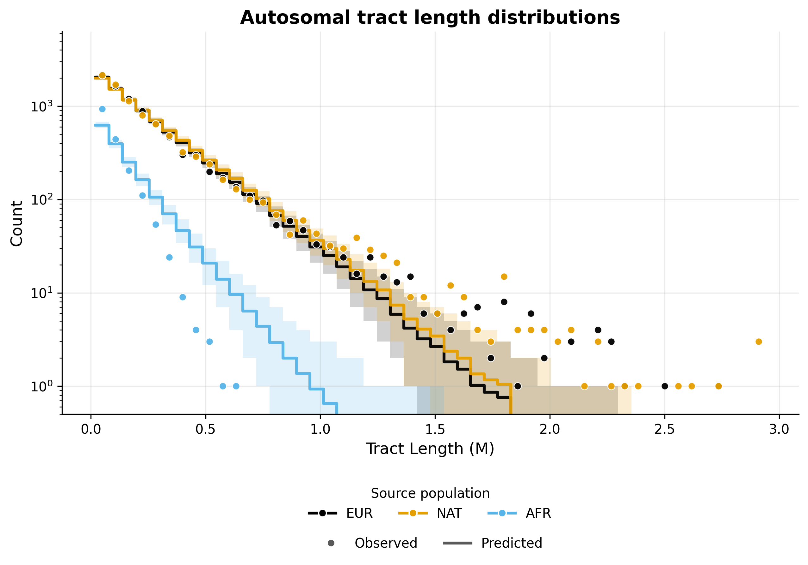
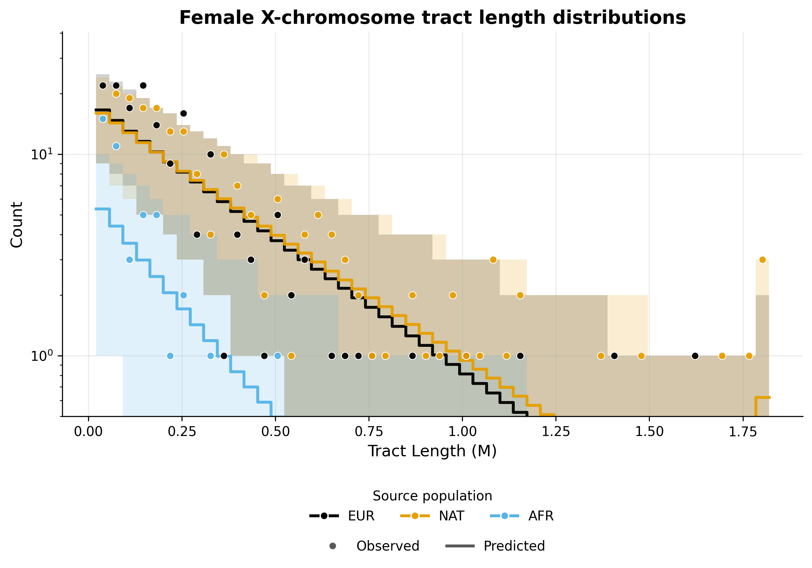
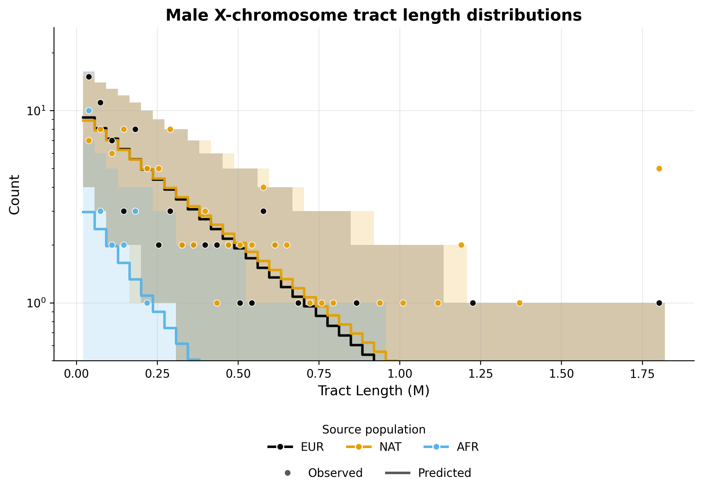

Note
Go to the end to download the full example code.
MXL inference - continuous pulse model#
This example implements inference for the MXL population under a continuous pulse model of admixture, using the tracts package. Inference is performed using autosomal and X chromosome data, allowing for the specification of sex-biased admixture.
To implement this example, we use the following driver file:
samples:
directory: ./TrioPhased/
individual_names: [
"NA19648","NA19649","NA19651","NA19652","NA19654","NA19655","NA19657","NA19658","NA19661","NA19663",
"NA19664","NA19669","NA19670","NA19676","NA19678","NA19679","NA19681","NA19682","NA19684","NA19716",
"NA19717","NA19719","NA19720","NA19722","NA19723","NA19725","NA19726","NA19728","NA19729","NA19731",
"NA19732","NA19734","NA19735","NA19740","NA19741","NA19746","NA19747","NA19749","NA19750","NA19752",
"NA19755","NA19756","NA19758","NA19759","NA19761","NA19762","NA19764","NA19770","NA19771","NA19773",
"NA19774","NA19776","NA19777","NA19779","NA19780","NA19782","NA19783","NA19785","NA19786","NA19788",
"NA19789","NA19792","NA19794","NA19795"]
male_names : [
"NA19649","NA19652","NA19655","NA19658","NA19661","NA19664","NA19670","NA19676","NA19679","NA19682",
"NA19717","NA19720","NA19723","NA19726","NA19729","NA19732","NA19735","NA19741","NA19747","NA19750",
"NA19756","NA19759","NA19762","NA19771","NA19774","NA19777","NA19780","NA19783","NA19786","NA19789",
"NA19792","NA19795"] #see Readme_dataprocessing.md for how this was generated
filename_format: "{name}_{label}_final.bed"
labels: [A, B] #If this field is omitted, 'A' and 'B' will be used by default
chromosomes: 1-22 #The chromosomes to use for analysis. Can be specified as a list or a range
allosomes: [X]
output_filename_format: "MXL_test_output_{label}"
log_filename: 'ASW_continuous_pulse.log'
output_directory: ./output_continuous_pulse/
verbose_log: 1
verbose_screen: 30
log_scale : True
model_filename: ../models/ccc.yaml
start_params:
t1: 13.5
REUR: 0.2
RAFR: 0.02
RNAT: 0.2
t2: 6.8
REUR_sex_bias: -0.99 # more males
RNAT_sex_bias: 0.99 # more females
RAFR_sex_bias: -0.1
repetitions: 3
seed: 100
maximum_iterations: 1000
unknown_labels_for_smoothing: ["UNK", "centromere","miscall"] # segments with these labels will be smoother over, that is, will be filled with neighbouring ancestries up to their midpoints.
exclude_tracts_below_cm: 2
npts : 50
#fix_parameters_from_ancestry_proportions: ['REUR', 'RAFR','REUR_sex_bias', 'RAFR_sex_bias']
ad_model_autosomes : M
ad_model_allosomes : DC
Complete results from this analysis are saved in the output directory specified in the driver file. Below, we display the optimal parameters estimated from this analysis, as well as the plots illustrating the inferred tract length distributions, compared to the observed histograms, for every source population and chromosome type (autosomes and X chromosome).
Optimal parameters#
parameter |
value |
|---|---|
REUR |
0.17172266430843788 |
REUR_sex_bias |
-0.0750442769953914 |
RNAT |
0.18231245251774572 |
RNAT_sex_bias |
0.006295500257754494 |
RAFR |
0.022699852907508773 |
RAFR_sex_bias |
0.010138025743403611 |
t1 |
14.141787108267799 |
t2 |
6.567998329803946 |
Tract length histograms#
Autosomal admixture#
{kind=link}

X chromosome admixture in females#
{kind=link}

X chromosome admixture in males#
{kind=link}

------------------------------------------------------------------------------------------------
Running tracts 2.0 with driver file: MXL_continuous.yaml
Reading data, demographic model and driver specifications...
------------------------------------------------------------------------------------------------
excluding_tracts_below set to 2.0 cM.
Ancestries: ['EUR', 'NAT', 'AFR']
Data autosome proportions: [0.468066 0.49277278 0.03920868]
Data allosome proportions: [0.33731709 0.62309703 0.03958588]
Model parameters : ['REUR', 'REUR_sex_bias', 'RNAT', 'RNAT_sex_bias', 'RAFR', 'RAFR_sex_bias', 't1', 't2']
Multiple starting parameters were generated. These will be converted to optimizer units and used for multiple optimization runs.
Run | Starting parameters
---------------------------------------------------
1 | [0.2, -0.8, 0.2, 0.8, 0.02, -0.1, 13.58, 7.821]
2 | [0.2, -0.8, 0.2, 0.8, 0.02, -0.1, 13.2, 7.07]
3 | [0.2, -0.8, 0.2, 0.8, 0.02, -0.1, 12.79, 6.644]
---------------------------------------------------
Optimization run #1
-----------------------------------------------------------------------------------------
Admixture is modelled with the M model for autosomes and with the DC model for allosomes.
Optimization is performed in two steps.
Step 1 : Optimizing autosomal likelihood over parameters ['REUR', 'RNAT', 'RAFR', 't1', 't2'].
Iter. Log-likelihood Model parameters Transmission
-----------------------------------------------------------------------------------------
30 , -891.942 , array([ 0.201816 , 0 , 0.20138 , 0 , 0.0205409 , 0 , 13.5728 , 7.14392 ]), Autosomes
60 , -870.746 , array([ 0.197281 , 0 , 0.200909 , 0 , 0.0209357 , 0 , 13.5733 , 6.92884 ]), Autosomes
90 , -864.537 , array([ 0.195854 , 0 , 0.200363 , 0 , 0.0211367 , 0 , 13.5143 , 6.86632 ]), Autosomes
120 , -863.424 , array([ 0.195482 , 0 , 0.200276 , 0 , 0.0211756 , 0 , 13.5191 , 6.8601 ]), Autosomes
150 , -862.512 , array([ 0.195171 , 0 , 0.200206 , 0 , 0.0212078 , 0 , 13.5235 , 6.85463 ]), Autosomes
180 , -861.594 , array([ 0.194857 , 0 , 0.200122 , 0 , 0.0212402 , 0 , 13.5296 , 6.84909 ]), Autosomes
Step 1 completed.
---------------------------------------------------------------------------------------------------------------------------
Step 2 : Optimizing autosomal + allosomal likelihood over parameters : ['REUR_sex_bias', 'RNAT_sex_bias', 'RAFR_sex_bias'].
Non-sex-bias parameters fixed at values from previous optimization step.
Iter. Log-likelihood Model parameters Transmission
---------------------------------------------------------------------------------------------------------------------------
210 , -192.904 , array([ 0.19487 , -0.0879264 , 0.200128 , 0.0127501 , 0.0212398 , 0.0205299 , 13.5298 , 6.8496 ]), Female allosomes
210 , -133.549 , array([ 0.19487 , -0.0879264 , 0.200128 , 0.0127501 , 0.0212398 , 0.0205299 , 13.5298 , 6.8496 ]), Male allosomes
210 , -861.575 , array([ 0.19487 , -0.0879264 , 0.200128 , 0.0127501 , 0.0212398 , 0.0205299 , 13.5298 , 6.8496 ]), Autosomes
240 , -191.532 , array([ 0.19487 , -0.155599 , 0.200128 , 0.0111662 , 0.0212398 , 0.0278943 , 13.5298 , 6.8496 ]), Female allosomes
240 , -133.038 , array([ 0.19487 , -0.155599 , 0.200128 , 0.0111662 , 0.0212398 , 0.0278943 , 13.5298 , 6.8496 ]), Male allosomes
240 , -861.454 , array([ 0.19487 , -0.155599 , 0.200128 , 0.0111662 , 0.0212398 , 0.0278943 , 13.5298 , 6.8496 ]), Autosomes
270 , 2.22045e+16 , array([ 0.19487 , -0.183354 , 0.200128 , 0.00968818 , 0.0212398 , 0.0330325 , 13.5298 , 6.8496 ]), OOB (oob=-2.220446049250313e-16)
300 , -190.844 , array([ 0.19487 , -0.189858 , 0.200128 , 0.00955509 , 0.0212398 , 0.0343935 , 13.5298 , 6.8496 ]), Female allosomes
300 , -132.789 , array([ 0.19487 , -0.189858 , 0.200128 , 0.00955509 , 0.0212398 , 0.0343935 , 13.5298 , 6.8496 ]), Male allosomes
300 , -861.359 , array([ 0.19487 , -0.189858 , 0.200128 , 0.00955509 , 0.0212398 , 0.0343935 , 13.5298 , 6.8496 ]), Autosomes
330 , -190.763 , array([ 0.19487 , -0.193911 , 0.200128 , 0.00951946 , 0.0212398 , 0.0354028 , 13.5298 , 6.8496 ]), Female allosomes
330 , -132.759 , array([ 0.19487 , -0.193911 , 0.200128 , 0.00951946 , 0.0212398 , 0.0354028 , 13.5298 , 6.8496 ]), Male allosomes
330 , -861.347 , array([ 0.19487 , -0.193911 , 0.200128 , 0.00951946 , 0.0212398 , 0.0354028 , 13.5298 , 6.8496 ]), Autosomes
360 , -190.74 , array([ 0.19487 , -0.19509 , 0.200128 , 0.00951451 , 0.0212398 , 0.0356503 , 13.5298 , 6.8496 ]), Female allosomes
360 , -132.75 , array([ 0.19487 , -0.19509 , 0.200128 , 0.00951451 , 0.0212398 , 0.0356503 , 13.5298 , 6.8496 ]), Male allosomes
360 , -861.343 , array([ 0.19487 , -0.19509 , 0.200128 , 0.00951451 , 0.0212398 , 0.0356503 , 13.5298 , 6.8496 ]), Autosomes
Step 2 completed.
---------------------------------------------------------------------------------------------------------------------------
Optimization run #2
-----------------------------------------------------------------------------------------
Admixture is modelled with the M model for autosomes and with the DC model for allosomes.
Optimization is performed in two steps.
Step 1 : Optimizing autosomal likelihood over parameters ['REUR', 'RNAT', 'RAFR', 't1', 't2'].
Iter. Log-likelihood Model parameters Transmission
-----------------------------------------------------------------------------------------
30 , -856.817 , array([ 0.192746 , 0 , 0.200003 , 0 , 0.021417 , 0 , 13.5088 , 6.82596 ]), Autosomes
60 , -849.169 , array([ 0.189168 , 0 , 0.19848 , 0 , 0.0216601 , 0 , 13.5648 , 6.80239 ]), Autosomes
90 , -847.076 , array([ 0.188371 , 0 , 0.197955 , 0 , 0.021765 , 0 , 13.5855 , 6.79094 ]), Autosomes
120 , -846.155 , array([ 0.188004 , 0 , 0.197657 , 0 , 0.0218046 , 0 , 13.5975 , 6.7864 ]), Autosomes
150 , -845.529 , array([ 0.187765 , 0 , 0.197481 , 0 , 0.021838 , 0 , 13.6056 , 6.78331 ]), Autosomes
180 , -844.958 , array([ 0.187529 , 0 , 0.197315 , 0 , 0.0218643 , 0 , 13.6152 , 6.78033 ]), Autosomes
Step 1 completed.
---------------------------------------------------------------------------------------------------------------------------
Step 2 : Optimizing autosomal + allosomal likelihood over parameters : ['REUR_sex_bias', 'RNAT_sex_bias', 'RAFR_sex_bias'].
Non-sex-bias parameters fixed at values from previous optimization step.
Iter. Log-likelihood Model parameters Transmission
---------------------------------------------------------------------------------------------------------------------------
210 , -192.316 , array([ 0.187455 , -0.0541543 , 0.197255 , 0.00901379 , 0.0218736 , 0.0132859 , 13.618 , 6.77938 ]), Female allosomes
210 , -133.006 , array([ 0.187455 , -0.0541543 , 0.197255 , 0.00901379 , 0.0218736 , 0.0132859 , 13.618 , 6.77938 ]), Male allosomes
210 , -844.756 , array([ 0.187455 , -0.0541543 , 0.197255 , 0.00901379 , 0.0218736 , 0.0132859 , 13.618 , 6.77938 ]), Autosomes
240 , -191.203 , array([ 0.187455 , -0.111391 , 0.197255 , 0.0141195 , 0.0218736 , 0.021631 , 13.618 , 6.77938 ]), Female allosomes
240 , -132.549 , array([ 0.187455 , -0.111391 , 0.197255 , 0.0141195 , 0.0218736 , 0.021631 , 13.618 , 6.77938 ]), Male allosomes
240 , -844.708 , array([ 0.187455 , -0.111391 , 0.197255 , 0.0141195 , 0.0218736 , 0.021631 , 13.618 , 6.77938 ]), Autosomes
270 , -190.641 , array([ 0.187455 , -0.14032 , 0.197255 , 0.0141106 , 0.0218736 , 0.0264049 , 13.618 , 6.77938 ]), Female allosomes
270 , -132.337 , array([ 0.187455 , -0.14032 , 0.197255 , 0.0141106 , 0.0218736 , 0.0264049 , 13.618 , 6.77938 ]), Male allosomes
270 , -844.668 , array([ 0.187455 , -0.14032 , 0.197255 , 0.0141106 , 0.0218736 , 0.0264049 , 13.618 , 6.77938 ]), Autosomes
300 , -190.067 , array([ 0.187455 , -0.170362 , 0.197255 , 0.0139925 , 0.0218736 , 0.0314085 , 13.618 , 6.77938 ]), Female allosomes
300 , -132.121 , array([ 0.187455 , -0.170362 , 0.197255 , 0.0139925 , 0.0218736 , 0.0314085 , 13.618 , 6.77938 ]), Male allosomes
300 , -844.614 , array([ 0.187455 , -0.170362 , 0.197255 , 0.0139925 , 0.0218736 , 0.0314085 , 13.618 , 6.77938 ]), Autosomes
330 , -189.807 , array([ 0.187455 , -0.184067 , 0.197255 , 0.0137091 , 0.0218736 , 0.0339175 , 13.618 , 6.77938 ]), Female allosomes
330 , -132.025 , array([ 0.187455 , -0.184067 , 0.197255 , 0.0137091 , 0.0218736 , 0.0339175 , 13.618 , 6.77938 ]), Male allosomes
330 , -844.585 , array([ 0.187455 , -0.184067 , 0.197255 , 0.0137091 , 0.0218736 , 0.0339175 , 13.618 , 6.77938 ]), Autosomes
360 , -189.527 , array([ 0.187455 , -0.198879 , 0.197255 , 0.0131866 , 0.0218736 , 0.0363636 , 13.618 , 6.77938 ]), Female allosomes
360 , -131.923 , array([ 0.187455 , -0.198879 , 0.197255 , 0.0131866 , 0.0218736 , 0.0363636 , 13.618 , 6.77938 ]), Male allosomes
360 , -844.551 , array([ 0.187455 , -0.198879 , 0.197255 , 0.0131866 , 0.0218736 , 0.0363636 , 13.618 , 6.77938 ]), Autosomes
Step 2 completed.
---------------------------------------------------------------------------------------------------------------------------
Optimization run #3
-----------------------------------------------------------------------------------------
Admixture is modelled with the M model for autosomes and with the DC model for allosomes.
Optimization is performed in two steps.
Step 1 : Optimizing autosomal likelihood over parameters ['REUR', 'RNAT', 'RAFR', 't1', 't2'].
Iter. Log-likelihood Model parameters Transmission
-----------------------------------------------------------------------------------------
30 , -839.57 , array([ 0.183856 , 0 , 0.195493 , 0 , 0.0221893 , 0 , 13.4096 , 6.75129 ]), Autosomes
60 , -827.174 , array([ 0.176409 , 0 , 0.187956 , 0 , 0.0227785 , 0 , 13.7219 , 6.66409 ]), Autosomes
90 , -821.985 , array([ 0.173436 , 0 , 0.184106 , 0 , 0.0228318 , 0 , 14.0421 , 6.58555 ]), Autosomes
120 , -821.129 , array([ 0.172708 , 0 , 0.183349 , 0 , 0.0227807 , 0 , 14.0742 , 6.58266 ]), Autosomes
150 , -820.108 , array([ 0.171919 , 0 , 0.182519 , 0 , 0.0227173 , 0 , 14.1276 , 6.57129 ]), Autosomes
Step 1 completed.
---------------------------------------------------------------------------------------------------------------------------
Step 2 : Optimizing autosomal + allosomal likelihood over parameters : ['REUR_sex_bias', 'RNAT_sex_bias', 'RAFR_sex_bias'].
Non-sex-bias parameters fixed at values from previous optimization step.
Iter. Log-likelihood Model parameters Transmission
---------------------------------------------------------------------------------------------------------------------------
180 , -191.503 , array([ 0.171723 , -0.00748584 , 0.182312 , 0.00518231 , 0.0226999 , 0.00519144 , 14.1418 , 6.568 ]), Female allosomes
180 , -132.459 , array([ 0.171723 , -0.00748584 , 0.182312 , 0.00518231 , 0.0226999 , 0.00519144 , 14.1418 , 6.568 ]), Male allosomes
180 , -819.847 , array([ 0.171723 , -0.00748584 , 0.182312 , 0.00518231 , 0.0226999 , 0.00519144 , 14.1418 , 6.568 ]), Autosomes
210 , -190.266 , array([ 0.171723 , -0.0719643 , 0.182312 , 0.00817069 , 0.0226999 , 0.00820686 , 14.1418 , 6.568 ]), Female allosomes
210 , -131.984 , array([ 0.171723 , -0.0719643 , 0.182312 , 0.00817069 , 0.0226999 , 0.00820686 , 14.1418 , 6.568 ]), Male allosomes
210 , -819.833 , array([ 0.171723 , -0.0719643 , 0.182312 , 0.00817069 , 0.0226999 , 0.00820686 , 14.1418 , 6.568 ]), Autosomes
240 , 2.22045e+16 , array([ 0.171723 , -0.0750938 , 0.182312 , 0.00629775 , 0.0226999 , 0.0101424 , 14.1418 , 6.568 ]), OOB (oob=-2.220446049250313e-16)
Step 2 completed.
---------------------------------------------------------------------------------------------------------------------------
---------------------------------------------------------------------------
Results from multiple optimization runs with different starting parameters:
-------------------------------------
Run | LogLik | Found parameters
-------------------------------------
1 | -1184.83 | [0.1949, -0.1951, 0.2001, 0.009514, 0.02124, 0.03566, 13.53, 6.85]
2 | -1165.98 | [0.1875, -0.1996, 0.1973, 0.01315, 0.02187, 0.03654, 13.62, 6.779]
3 | -1142 | [0.1717, -0.07504, 0.1823, 0.006296, 0.0227, 0.01014, 14.14, 6.568]
-------------------------------------
Final parameters and corresponding likelihood:
-------------------------------------------------------------------------------------------------------------------------
LogLik | REUR REUR_sex_bias RNAT RNAT_sex_bias RAFR RAFR_sex_bias t1 t2
-------------------------------------------------------------------------------------------------------------------------
-1142 | 0.1717 -0.07504 0.1823 0.006296 0.0227 0.01014 14.14 6.568
-------------------------------------------------------------------------------------------------------------------------
Results saved to : ./output_continuous_pulse/
{'destination_dir': PosixPath('/home/runner/work/tracts/tracts/docs/source/auto_examples/MXL/output_continuous_pulse'), 'table_file': PosixPath('/home/runner/work/tracts/tracts/docs/source/auto_examples/MXL/output_continuous_pulse/MXL_test_output_optimal_parameters.txt')}
import sys
from pathlib import Path
sys.path.append('.')
from tracts.driver import run_tracts
script_path = Path(sys.argv[0]).resolve()
driver_filename = "MXL_continuous.yaml"
run_tracts(driver_filename = driver_filename, script_dir = script_path.parent)
# Don't run the code below: for documentation purposes only.
from tracts.doc_utils import prepare_example_outputs_for_docs
prepare_example_outputs_for_docs("output_continuous_pulse")
Total running time of the script: (132 minutes 27.082 seconds)